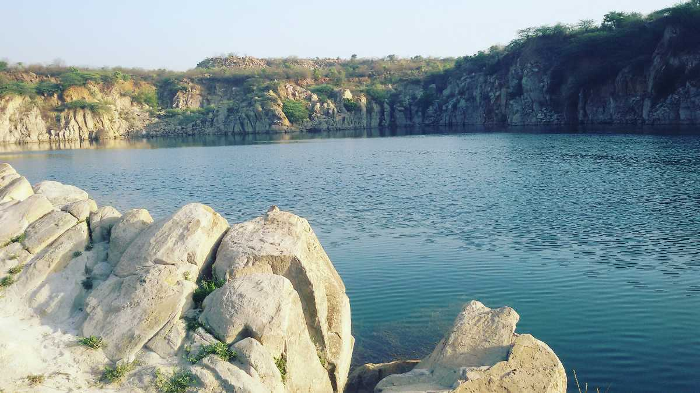
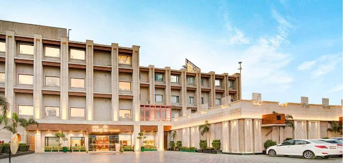
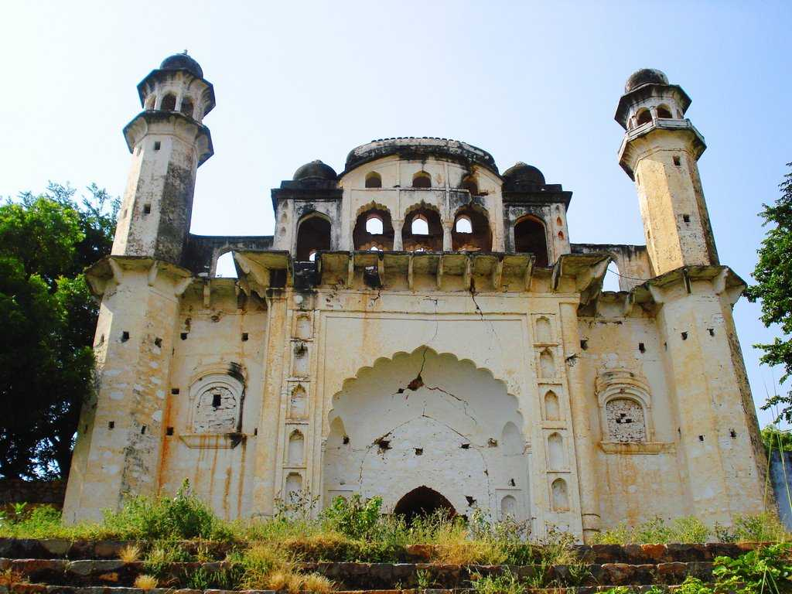

Once little more than a dull and comparatively unknown suburb of the national capital region, today, Gurgaon is not only one of the most urbanised cities of India, but it also boasts of a skyline that can easily rival those of Hong Kong and Singapore.

Faridabad is a major industrial city in Haryana, India, located near Delhi and part of the Delhi National Capital Region (NCR), known for its industries and proximity to Delhi, and also for attractions like Badhkal Lake and the Suraj Kund Fair.
A perfect weekend getaway from Delhi, Sultanpur Bird Sanctuary is an amazing escape, especially for nature lovers and birding enthusiasts. It is home to a number of migratory birds and is a great spot for spotting the various species, especially during winters.
Morni Hills is a hill station situated on the outskirts of Panchkula in Haryana close to Chandigarh. Being the only hill stations in Haryana, it is also a popular picnic destination for locals and tourists alike.
Damdama Lake is a beautiful lake 24 km south of Gurugram, off the Gurugram-Alwar road. It is around 64 km i.e. an hour's drive away from New Delhi and has a calm and peaceful vibe about it.
Spread over a stretch of whopping 13,000 acres (53 km square) Kalesar National Park is a protected area in Yamuna Nagar, Haryana, perfect for nature enthusiasts and wildlife lovers.

A favourite among the people of Delhi, Murthal is a place that lives, breathes, eats, and loves Paranthas. Situated on National Highway 1 connecting Delhi to Amritsar, Murthal is a step away from being the Paratha capital of India.

70 kms off Delhi and at 190 m altitude, the historical city of Nuh traces its roots to the Aryan civilization, and later the Tughlaq Dynasty.. Nuh, located in the Mewat district of Haryana is a modest home to several historical structures and ruins and is a day trip into a bit of history.

Gurudwara Nada Sahib, a significant Sikh pilgrimage site, is located on the banks of the Ghaggar River in Panchkula, Haryana, and is revered for being a resting place for Guru Gobind Singh and his army after the Battle of Bhangani in 1688.
Rohtak is a charming city in Haryana. This incredibly underrated city boasts well-designed residential blocks, industrial sites as well as several tourist destinations.
Karnal is a city located in the Indian state of Haryana, known for its rich historical and cultural heritage. It is situated on the banks of the Yamuna River and is famous for its agricultural produce, particularly rice and wheat.

Hisar is one of Haryana's rapidly expanding urban centres. Aside from being the district capital, the city of Hisar is also notable for its well-planned neighbourhoods.